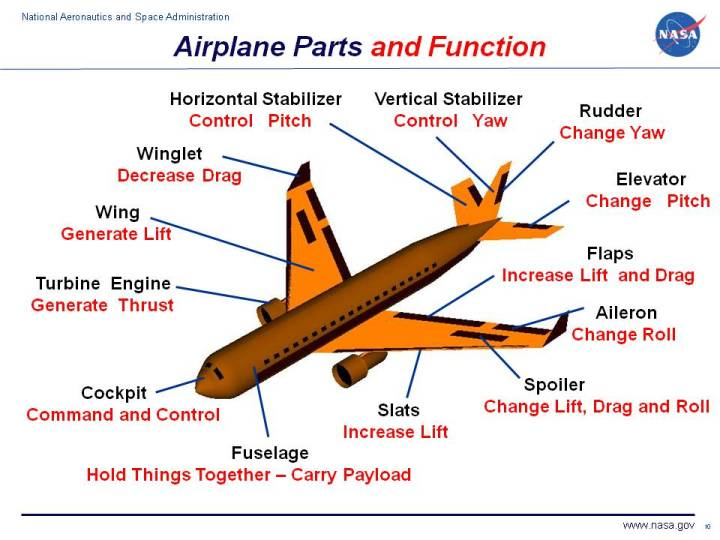

Aircrafts have pushed the limits of science and technology over the centuries. From its first conception in the 1880s and its first stable flight in 1903, aircrafts have since adapted countless alterations. The simpler propeller engines became jet engines. The planes that used to carry one to two persons now carry hundreds of passengers. But does this mean that parts of airplanes have changed over centuries? Well, the answer is yes. What used to be vessels having not more than hundreds of parts have developed into full-blown technological wonders. So, you might ask, “How many parts are in an aircraft”? For today’s commercial aircraft, the answer is millions. Yes, you have read that right. It takes millions of small and big parts to assemble a fully functioning commercial plane. In an article by Lufthansa, they claimed that it took 6 million parts to build Boeing 747-8. The plane is painstakingly assembled through various levels, such as wire and cable shop, paneling, wing assembly, body join and paint works. However, it is possible to categorize the parts into five major areas. These are fuselage, wings, stabilizer, engine, landing gear. These parts are still made up of thousands of tinier components. Let’s take a look at each one’s function. The fuselage- is the main part of the aircraft. It is the hollow tube that contains the passengers. Its shape is wider in the front, then becomes more tapered at the back to make the plane aerodynamic. Attached to the fuselage are the other parts of the plane. The wings- are the most distinguishable part of the aircraft. On the mere basis of its appearance, it is what differentiates airplanes from other vessels. Without wings, aircraft can’t fly. It is what stabilizes the flight of the vessel. Usually, the wingspan of an aircraft is almost, if not the same, length of the entire plane. Manufacturers use metals such as steel, aluminum, and titanium to build the wings. They need the wings to be lightweight and anti-corrosive. the plane’s engine. It is the one responsible for pushing the vessel upwards and maintaining its altitude. The engine is made up of several subparts like nozzles, compressors, turbines, cooling systems, etc. Nowadays, engines are usually located below each wing of the aircraft. The landing gear- is one of the less complicated parts of the aircraft in so far as it functions only during take-off and landing. It is what supports the body of the plane – separating it from the ground. Most planes have wheels for landing gear, but there are also landing gears such as skis or floats that allow aircraft to land on snow and water, respectively.
Home Introduction History Types of Airplane The Anatomy of Airplane Summary